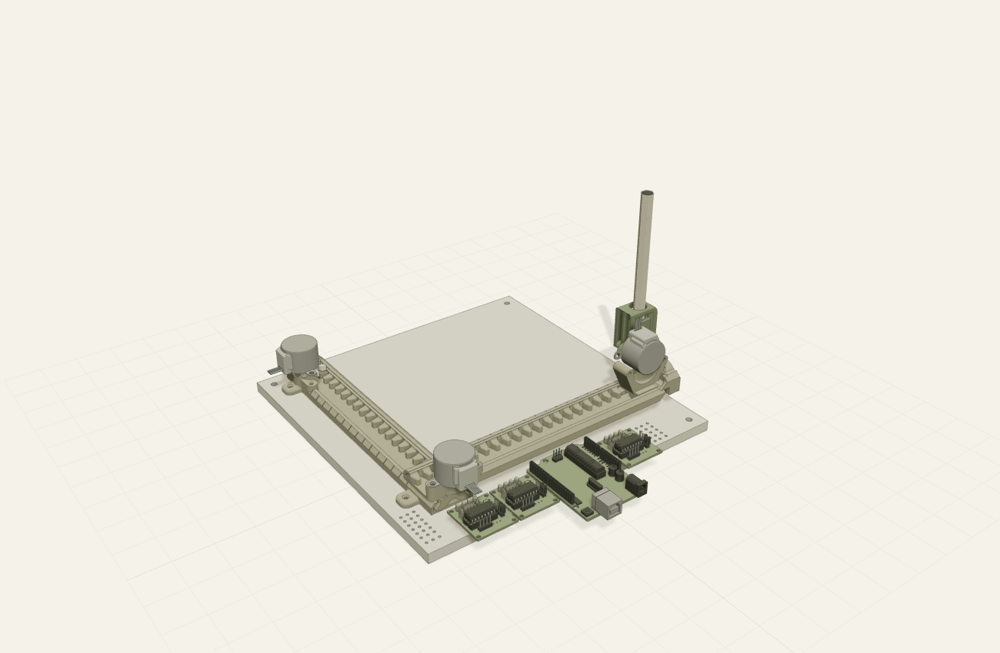
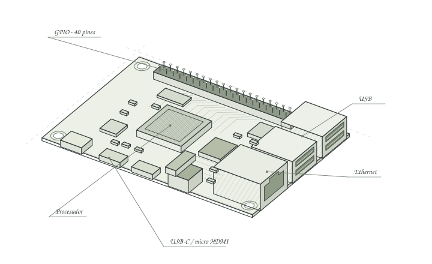
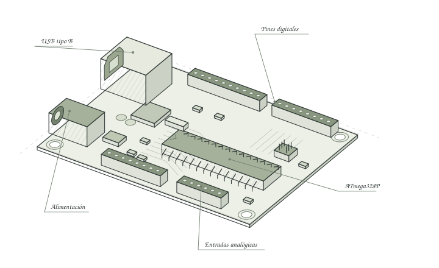
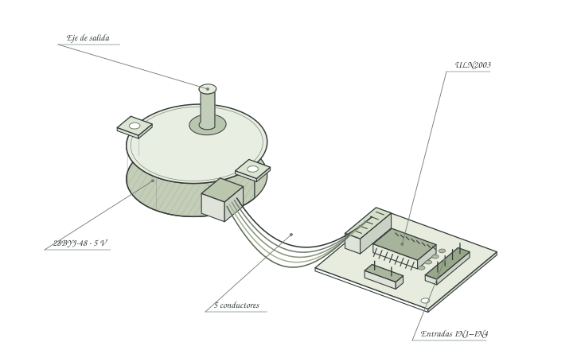
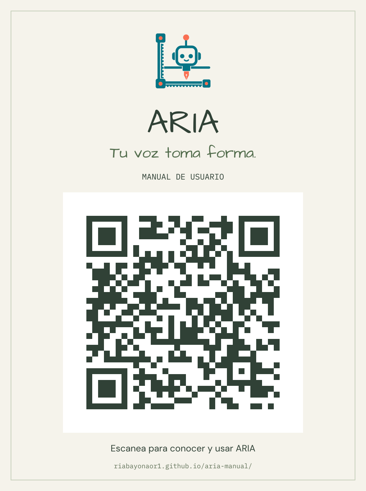

Enciende y espera
Usa la alimentación del montaje y la red configurada. El servicio de ARIA se inicia con la Raspberry; la conversación y las respuestas nuevas requieren conexión a internet y disponibilidad de los proveedores.
✳ DEL DIÁLOGO AL PAPEL
Un asistente que escucha, conversa y transforma tus ideas en líneas. Este es el cuaderno para conocer, construir y usar ARIA.

un lápiz, tres ejesIDEADO PARA APRENDER HACIENDOVoz, electrónica y fabricación digital en un mismo proyecto educativo.
PONERSE EN MARCHA
Para hablar con ARIA no necesitas preparar el CNC. Enciende la Raspberry Pi, comprueba el micrófono y los parlantes y espera a que aparezca su rostro en la pantalla OLED.
Usa la alimentación del montaje y la red configurada. El servicio de ARIA se inicia con la Raspberry; la conversación y las respuestas nuevas requieren conexión a internet y disponibilidad de los proveedores.
Acércate al micrófono y di Aria
. Al responder Te escucho
, tienes 30 segundos para empezar tu pregunta.
Prueba Hola ARIA, ¿cuánto es dos más dos?
. Espera a que termine. Puedes continuar durante 30 segundos sin repetir su nombre.
Di ARIA, hasta luego
para volver a espera y limpiar la memoria breve de la conversación. Las notas guardadas explícitamente se conservan.
Los ojos muestran el estado de la interacción. El rostro es una animación en pantalla; no mueve la cabeza.
Dale tiempo para responder.http://ricardo4.local:8080 y sigue la preparación del certificado local. En iPhone, activa también la confianza SSL del certificado instalado.https://ricardo4.local:8443, introduce el código de acceso que te dé el operador y pulsa Conectar. El nombre del equipo puede cambiar en otras instalaciones.Solo puede haber un teléfono conectado. Durante movimiento CNC mantén la página visible y la pantalla desbloqueada: ocultarla o desconectar cancela el movimiento. La página de este manual no controla el robot.
ANATOMÍA DEL ASISTENTE
La Raspberry entiende la petición. El Arduino coordina los pasos. La mecánica lleva el lápiz hasta el papel.

FIG. 02EL CEREBRO
Ejecuta ARIA en Python, recibe audio, conecta la inteligencia y la voz, anima el rostro y convierte texto e imágenes en trayectorias para el CNC.

FIG. 03EL CONTROLADOR
Recibe G-code por USB. El firmware ARIA basado en GRBL planifica el movimiento, consulta los topes y envía la secuencia a los drivers de los motores.

FIG. 04EL MOVIMIENTO
Tres motores de 5 V: dos desplazan X/Y y el tercero gira el portalápiz. Cada uno usa un driver ULN2003 para energizar sus bobinas en secuencia.
Guías, carros, cremalleras, engranajes y portalápiz impresos en 3D, con una superficie para sujetar el papel.
Micrófono, tarjeta de audio USB, parlantes y OLED I²C SSD1306 de 128 × 64 píxeles para el rostro.
Topes en X/Y y alimentación adecuada. Z no tiene sensor: su posición inicial la verifica el operador.
DEL MODELO AL PROTOTIPO
ARIA reúne una estructura CNC imprimible, un sistema de control de movimiento y un asistente de voz. Este es el recorrido de construcción documentado.
Se partió de Simple CNC Plotter, de mith, derivado del diseño de DAZ. El ensamblaje de ARIA se trabajó en Autodesk Fusion para reconocer piezas, recorridos y sujeción del lápiz. El visor conserva esa mecánica y adapta la electrónica al Uno R3.
Las piezas STL permiten fabricar guías, soportes, carros y engranajes por impresión 3D. Se monta la base, se comprueba el deslizamiento sin atascar y se instalan motores y portalápiz. El ajuste y la holgura se revisan en el montaje físico.
El Uno R3 se conecta por USB a la Raspberry y controla tres ULN2003. Se incorporan los motores, los topes X/Y y su alimentación. El cableado debe seguir el esquema del firmware instalado: esta vista 3D es explicativa y no sustituye un plano eléctrico.
En Raspberry Pi se integraron activación local, transcripción, conversación, síntesis de voz y animación OLED. Un controlador local valida cada operación CNC antes de enviarla al Arduino; también se añadió una interfaz móvil de red local.
El control CNC de ARIA separa medir, recuperar el origen y recorrer el borde. Las pruebas del 14 de octubre verificaron software, referencias y movimiento sin lápiz. El contacto y la calidad del trazo sobre papel todavía requieren validación física.
El registro de referencia indica 61,699 × 72,488 mm de recorrido y un margen interior de 3 mm. La zona útil resultante es 55,699 × 66,488 mm. Son medidas de ese montaje, no dimensiones universales del diseño ni una garantía de precisión.
LO QUE OCURRE POR DENTRO
| Capa | Tecnología | Qué aporta |
|---|---|---|
| Activación | Vosk · español | Detecta «Aria» localmente antes de iniciar la conversación. |
| Transcripción | OpenAI gpt-4o-mini-transcribe | Convierte el audio activado en texto; requiere internet. |
| Conversación | OpenAI gpt-5.6-luna | Genera respuestas e interpreta intenciones con herramientas limitadas. |
| Voz | ElevenLabs eleven_v3_conversational | Sintetiza respuestas; saludos y algunos avisos usan audios locales preparados. |
| Aplicación y rostro | Python · Linux · SSD1306 | Coordina audio, estados, servicios y ojos animados en OLED. |
| Diseño y conversión | Autodesk Fusion · STL · SVG · G-code | Modela la mecánica y transforma geometría en trayectorias validadas. |
| Movimiento | GRBL adaptado · firmware ARIA R6 | Controla motores, topes, referencias y recorrido desde el Uno R3. |
| Memoria y teléfono | SQLite · HTTPS local · PWA | Guarda notas y temporizadores explícitos y permite un micrófono remoto. |
Los identificadores anteriores describen la configuración del proyecto, revisada al 16.10.2026; no son una recomendación de modelos ni una garantía de disponibilidad futura.
Local: activación, validación CNC, texto a trazos, figuras básicas, gráficas matemáticas, vectorización de imágenes, memoria y temporizadores. Crear un dibujo nuevo a partir de una descripción puede consultar el modelo.
Con proveedores: la transcripción del audio activado, la conversación y las respuestas de voz nuevas. Convertir una figura local no implica que la entrada por voz sea gratuita. La espera no consulta modelos.
No se archivan las grabaciones del micrófono. La conversación breve vive en RAM; las notas solo se guardan si lo pides. Las notas son compartidas por la instalación: ARIA no identifica quién habla. No le dictes contraseñas ni claves. Las APIs conservan sus propias políticas de datos.
TU PRIMER TRAZO
El CNC necesita una referencia física vigente. Después de reiniciar, detener, perder USB o recibir una alarma, vuelve a comprobar la posición real del portalápiz. Fuera de una conversación activa, comienza cada orden con «Aria»; desde el botón de micrófono del teléfono no hace falta.
Con el lápiz retirado, verifica el portalápiz. Si está completamente levantado, di Confirmo que el portalápiz está levantado
. Si está vertical, di El portalápiz está vertical
. Espera la confirmación de registro.
Di Aria, mide el área de trabajo
. Mantén libre el recorrido y espera a que termine. Luego pregunta ¿Qué área tengo?
. Recuperar el origen no vuelve a medir.
Si es menor que el recorrido, pide Usa un área de escritura de cuarenta por cincuenta milímetros
. Después, Recorre el borde del área
. El lápiz permanece elevado: verifica que el rectángulo quede sobre el papel sujeto. Para quitar la restricción de papel, di Aria, restaura el área completa
; conserva las medidas mecánicas.
Di Quiero acomodar el lápiz
, ajústalo físicamente y, solo cuando esté instalado, Ya coloqué el lápiz
. Comprueba el contacto con supervisión del operador antes de un trabajo completo.
Prueba Aria, escribe la frase Hola ARIA
o Aria, dibuja una estrella
. Espera la confirmación de finalización. Un diseño guardado no demuestra que se haya trazado.
DE UNA IMAGEN A UNA LÍNEA
En la interfaz local, abre Convertir a G-code, elige texto, una descripción o una imagen y pulsa Preparar G-code. Revisa la vista previa y descarga el .nc o el SVG. Convertir solo prepara archivos.
Para solicitar ejecución: Aria, dibuja la imagen enviada
. Se aplican las mismas comprobaciones físicas.
SVG estático, con texto pasado a trazos. Las fotografías se convierten en bordes monocromáticos; no se reproducen colores ni rellenos.
UNA GUÍA PARA CONVERSAR
Usa estas frases como punto de partida. Las peticiones naturales pueden variar; si falta información, ARIA debe pedir una aclaración antes de mover.
Conoce el catálogo disponible. También puedes preguntar o pedir una explicación breve.
Consulta temperatura, memoria y disco. No equivale a probar la conexión con los proveedores.
Consulta su estado. «Mide el área de trabajo» mide; «vuelve al origen» recupera la referencia X/Y con el lápiz elevado.
Ordena mover Z a vertical y requiere referencia vigente. «El portalápiz está vertical» declara una posición sin moverlo.
Texto en mayúsculas con Ñ, Ü y tildes. Máximo 300 caracteres, siempre que quepan en el área; no admite emojis.
También círculo, casa, triángulo, rectángulo, estrella y cuadrado. Las figuras se ajustan al área y conservan sus proporciones.
Genera contornos sencillos con el modelo, los valida y los guarda para reutilizarlos. Requiere conexión y presupuesto.
Admite y=f(x), ejes y rangos. Prueba «en x de menos cinco a cinco y en y de cero a veinticinco».
«¿Qué recuerdas?» consulta las notas. «Olvida que mi color favorito es azul» borra la nota identificada.
«Mis temporizadores» consulta pendientes. Los avisos no ejecutan movimientos y pueden necesitar conexión para hablar.
Las letras se ajustan desde 8 mm hasta un mínimo configurado de 4 mm. Si el texto completo no cabe, se rechaza sin cortar palabras ni crear otra página. Un carácter sin trazo disponible también se rechaza.
Las gráficas admiten funciones explícitas de una variable, operaciones acotadas, seno, coseno, tangente, raíz, valor absoluto, exponencial y logaritmo natural. Las trigonométricas usan radianes; el rango por defecto es −5 a 5 en ambos ejes. No se dibujan gráficas 3D ni ecuaciones implícitas. Las curvas se aproximan con segmentos.
Si falta preparación física, puede guardarse un diseño sin ejecutarlo. Tras preparar ARIA debes pedir el trabajo de nuevo. No queda una orden pendiente que arranque automáticamente.
UN PROTOTIPO BIEN CUIDADO
Sujeta el papel. Retira objetos del recorrido, verifica cables y tornillos y comprueba el desplazamiento sin forzar piezas. No conectes ni desconectes motores con la alimentación activa.
Mantén las manos lejos de carros y engranajes. No dejes trabajando el prototipo sin supervisión. Conserva visible la interfaz móvil si controla la sesión.
Espera a que termine o detén la operación. Retira el lápiz si vas a intervenir. Apaga Linux correctamente antes de quitar la alimentación de la Raspberry.
Comprueba alimentación, audio y volumen. Di «Aria» cerca del micrófono y espera «Te escucho». Si hay un teléfono conectado, el micrófono del robot queda reservado: desconecta el teléfono. Si la activación funciona pero no responde, revisa internet y la disponibilidad de las APIs.
Comprueba la posición actual del portalápiz, sin suponerla por un archivo antiguo. Declárala solo cuando sea cierta y espera a que el controlador la registre. Después solicita medición u origen. Una orden de mover a vertical no establece por sí sola esa referencia.
Cancela la operación y revisa cable USB, topes, alimentación y obstáculos con los motores apagados. La referencia anterior deja de ser válida. Tras resolver la causa, verifica Z y vuelve a referenciar. No fuerces un desbloqueo ni reanudes un archivo a ciegas.
ARIA no guarda un área nueva si los recorridos resultan inconsistentes. Detén el trabajo y revisa atascos, fijaciones y finales de carrera con su cableado antes de repetir. No amplíes los límites para ocultar el problema.
Acorta el texto, revisa caracteres y consulta el área disponible. Un margen también ocupa espacio. Para imágenes usa contornos claros y menos detalle; respeta 8 MB y 16 MP. No aumentes las dimensiones más allá del recorrido medido.
Usa la misma red Wi‑Fi, revisa el nombre local y prepara el certificado desde el puerto 8080. Entra por HTTPS en el 8443 y permite el micrófono. Confirma que no haya otra sesión conectada. Si el nombre del equipo cambió, solicita la dirección actual al operador.
Convertir prepara un archivo, no ejecuta. Confirma montaje, referencia, área y lápiz. Después solicita explícitamente escribir o dibujar. La existencia de un SVG o un G-code no confirma un trabajo físico.
En la terminal de la Raspberry, con el usuario de la instalación:
systemctl --user status aria --no-pager
systemctl --user stop aria
systemctl --user start aria
systemctl --user restart ariaDetén el CNC antes de reiniciar o actualizar. Conserva una copia privada del perfil CNC y de la configuración, sin subir claves al repositorio público. La configuración del área no sustituye la medición de pasos/mm; esa escala exige una medida física externa.
Z gira el portalápiz. Sus unidades de controlador no describen milímetros de altura: vertical 0, escritura −20 pasos y elevación +192 pasos en la referencia documentada. No copies estos valores a otro montaje sin verificarlo. Para apagar desde terminal, después de detener ARIA: sudo shutdown -h now.
EL CUADERNO, SIEMPRE A MANO

El QR abre este manual en GitHub Pages. Puedes imprimirlo y colocarlo junto a ARIA para consultar los pasos antes de usar el robot.
riabayonaor1.github.io/aria-manual/ ↗Manual elaborado a partir del código y guías del proyecto: LEEME, operación por voz, texto/dibujos/funciones y móvil de aria_raspberry, más los registros R6 del 14 de octubre y la sustentación del 15 de octubre de 2026. El movimiento sin lápiz está documentado; la escritura física sobre papel y su calidad aún deben validarse.
El modelo 3D es ilustrativo: la ubicación de la electrónica y el despiece no constituyen un plano de fabricación o cableado validado.